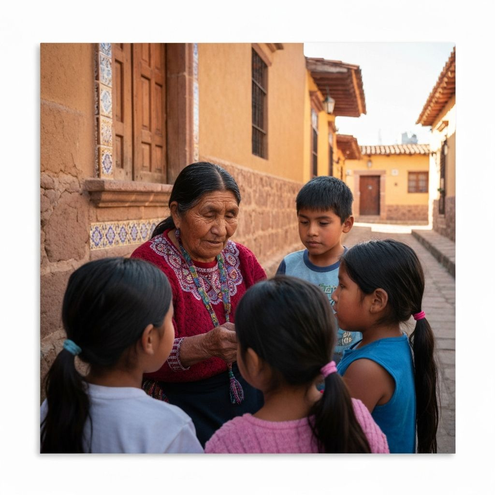
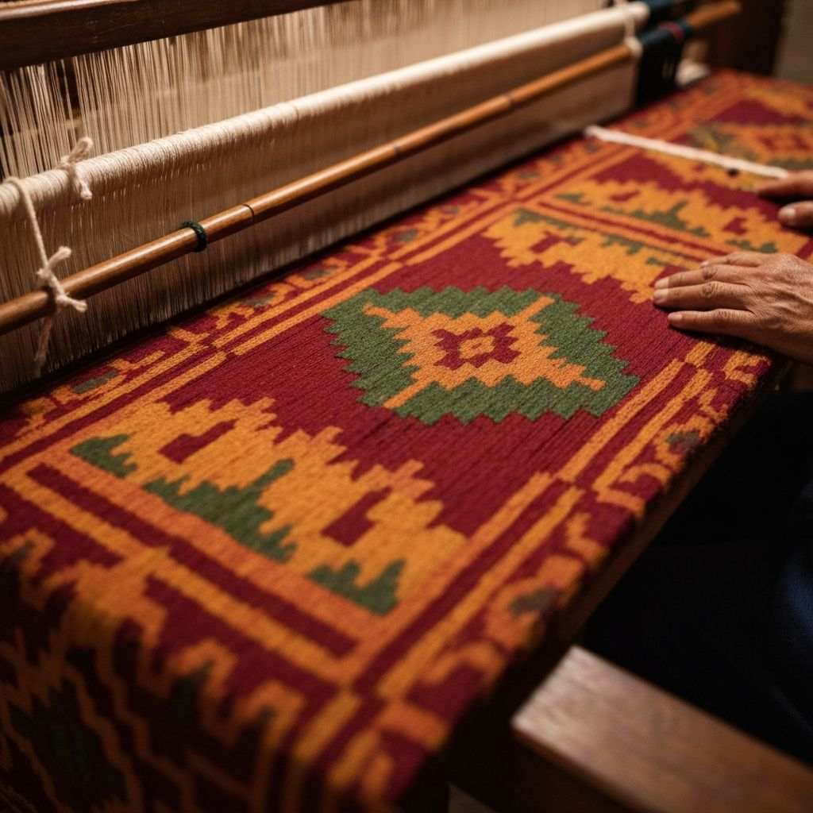
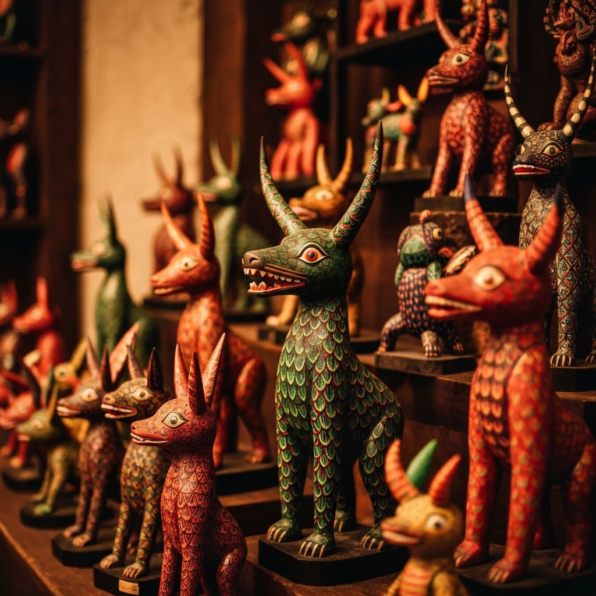

Visualización
Panel de Lengua: Náhuatl
Holas como estas
Estadísticas
Análisis de Datos
Descargas
Oaxaca alberga 16 grupos etnolinguisticos y mas de 176 variantes linguisticas. Cada lengua es un universo de conocimiento ancestral, historia y cosmovision que merece ser preservado para las generaciones futuras.
Holas como estas



Lenguas Vivas de Oaxaca es una plataforma dedicada a la documentación, visualización y difusión de la extraordinaria diversidad lingüística del estado de Oaxaca, México.
Trabajamos en colaboración con comunidades indígenas, lingüistas, maestros bilingues e instituciones académicas para crear recursos accesibles que contribuyan a la preservación y revitalización de estas lenguas ancestrales.
¿Eres hablante, investigador, maestro bilingüe o simplemente te interesa la diversidad lingüística? Escríbenos.
Accede a recursos exclusivos y contribuye a la preservación lingüística.